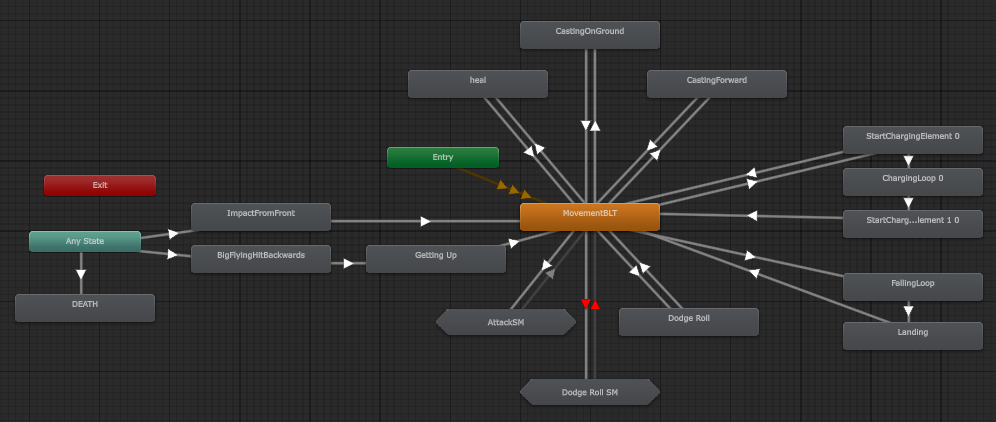
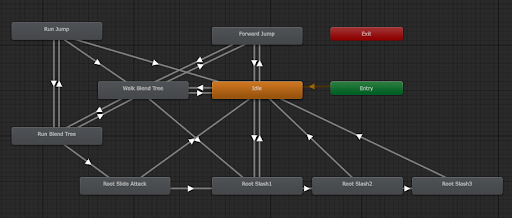

A four-week Soulslike made at Futuregames, where I was lead programmer. I built the enemy state machine used by every enemy in the game and the elemental system, implemented all of the animations and audio, and wrote the first version of the player controller.
- My role
- Lead programmer
- Team
- 4 designers, 4 programmers
- Duration
- 4 weeks
- Genre
- Soulslike
- Tech
- Unity, C#, FMOD
A state machine for every enemy
I built a two-tiered state machine that designers could easily configure in the editor, using weights and attack pools to shape how each enemy fights.
We started out with a GOAP framework that didn't come together in time. At the start of week three I made the call to switch, built the FSM from scratch in about two and a half days, and used it to implement every enemy and the boss.
How the state machine works
Short excerpts from the source, unchanged. The full game project is on GitHub, and there's also a cleaned-up version that shows the enemies in a simple test scene.
public enum FsmEnemyStates
{
Idle,
Patrol,
Combat,
Dead,
Stunned
}
public enum FsmEnemyCombat
{
CombatIdle,
MoveTo,
MoveAway,
AttackCombo,
LightAttack,
HeavyAttack,
RangedAttack,
JumpAway,
JumpToPlayer,
Hit,
KnockedDown
}The two tiers. The main states decide what the enemy is doing overall. Once it's in combat, a second tier of combat states decides its next action.
[Header("We use this value to prioritize actions when several are available, higher value = more important")]
[Range(0.001f, 9f)]
[SerializeField] public float stateWeight = 4f;
[Header("The time it takes before we can enter this state again")]
[SerializeField] private float stateCooldown = 2.5f;
[Header("Is distance a factor for activating this state?")]
[SerializeField] private bool useDistance = true;
[Header("The closest we can be to target to activate the state")]
[SerializeField] public float minActivationDistance = 1f;
[Header("The furthest we can be to target to activate the state")]
[SerializeField] public float maxActivationDistance = 10f;Each combat state is a component that designers add to an enemy and tune in the Inspector: its weight, its cooldown, and the distance range it can be used from.


The same settings in the editor. The headers in the code above become the labels designers read, and each enemy gets its own mix of combat states on a combat config object.
float minWeight = 0f;
FsmCombatState bestState = null;
foreach (FsmCombatState state in avaliableCombatStates)
{
if (state.stateWeight > minWeight)
{
minWeight = state.stateWeight;
bestState = state;
}
}
if (bestState == null)
{
return m_combatIdleStates[0];
}
return bestState;Choosing the next action. The enemy gathers the combat states it can enter right now, from its attacks first, then movement, then idle, and picks the one with the highest weight.
From decision to animation
I also implemented all of Venator's animations, along with all of its audio in FMOD. This is the path an enemy attack takes through the code, from the state machine's decision to the animation playing and back again.

Player Animator controller 
Enemy Animator controller


-
The state machine enters the attack
After picking the best combat state, the FSM starts the shared attack cooldown and enters the state.
EnemyFsm.cs, lines 249–256 if(newState.GetCombatActionType() == FsmCombatActionType.AttackAction) { m_onGeneralAtkCooldown = true; } m_currentCombatState = newState; m_currentCombatState.EnterState(); } -
The attack state asks for the attack
The heavy attack state passes the request on to the enemy's movement and animation controller.
HeavyAttackCombatState.cs, lines 16–20 public override void EnterState() { base.EnterState(); fsmOwner.npcFsmController.DoHeavyAttack(); } -
The controller plays the animation
It stops syncing movement with navigation, so the attack's root motion takes over, and fires the Animator trigger.
FsmRootMotionController.cs, lines 212–216 public void DoHeavyAttack() { m_doSyncMovement = false; m_animator.SetTrigger(HeavyAttack); } -
The animation switches the hitbox on and off
Animation events on the attack clip call this during the swing. Zero turns the hitbox off, and any other value turns it on and doubles as a damage multiplier.
FsmRootMotionController.cs, lines 93–101 public void ToggleMainHitbox(int toggleState) //Called from animation { float dmgMultiplier = toggleState; if(toggleState == 0) mainHitbox.DoToggleHitbox(false, 1f); else mainHitbox.DoToggleHitbox(true, dmgMultiplier); } -
The state watches the Animator
While the attack plays, the FSM updates the state every frame. When the Animator is heading into a state tagged Movement, the attack has finished. If an Any State transition cuts in, for example when the enemy is hit, the attack is aborted.
HeavyAttackCombatState.cs, lines 32–42 public override void UpdateState() { if (fsmOwner.animator.GetNextAnimatorStateInfo(0).IsTag("Movement")) { ExitState(); } else if (fsmOwner.animator.GetAnimatorTransitionInfo(0).anyState) { AbortState(true); } } -
Control goes back to the state machine
Exiting starts this state's own cooldown and tells the FSM, which picks the next action, and the loop starts again.
FsmCombatState.cs, lines 50–56 public virtual void ExitState() { m_inState = false; m_onCooldown = true; StartCoroutine(DoStateCooldown()); fsmOwner.OnDidExitCombatState(); }
Keeping root motion and navigation in sync
The enemies move with root-motion animation, but the AI steers them with Unity's NavMesh. Each frame, the animation's root position becomes the enemy's position and is fed back to the NavMesh agent, so animation and navigation never drift apart.
private void OnAnimatorMove() //Animator movement - root movement
{
if (m_isDead || m_isBeingPushed)
return;
Vector3 rootPosition = m_animator.rootPosition;
rootPosition.y = m_navAgent.nextPosition.y;
transform.position = rootPosition;
m_navAgent.nextPosition = rootPosition;The rest of the method handles attack momentum and gravity.
Elemental system
Much of my time went into the elemental system, which interacts with both enemies and objects in the world. The damage and health system is part of it.
At its core is one big interface. Every object that takes part in the system implements it, and objects use it to recognise each other: anything that implements the interface can interact with anything else that does.
How the elemental system works
public interface IDamageableElementalSource
{
//public HitInfo GetHitInfo(HitInfo hitInfo);
public enum ElementInteractType{Enemy, Source, User}
public float ChargeElementTime();
public void TakeDamage(float damageAmount, ElementTypes.ElementType elementType, bool UsedSword);
public void Heal(float healAmount, ElementTypes.ElementType elementType);
public ElementInteractType InteractType();
public int EquippedElementAmount();
public int ElementAmountToGive();
public ElementTypes.ElementType GetSourceElement();
public void AddElement(ElementTypes.ElementType elementType, int amount, bool fromCharge);
public void RemoveElement(ElementTypes.ElementType elementType, int amount);
}The interface. Enemies, the player and elemental pickups all implement it, and InteractType() tells others which kind of object they've found.
public IDamageableElementalSource.ElementInteractType InteractType()
{
return IDamageableElementalSource.ElementInteractType.Enemy;
}An enemy's side of it: it reports itself as an Enemy.
private void OnTriggerEnter(Collider other)
{
if (other.GetComponent<IDamageableElementalSource>() != null)
{
IDamageableElementalSource target = other.GetComponent<IDamageableElementalSource>();
print("try dealt " + m_playerStatus.GetSourceElement() + " damage?");
switch (target.InteractType())
{
case IDamageableElementalSource.ElementInteractType.Enemy:Using it. When the sword hits something, it checks whether the object implements the interface, then asks what kind of object it is to decide what happens. The switch continues in the full file.
Player character
Early on I owned the player controller. Starting from a prototype controller, I implemented the moveset we wanted, including the initial warp-motion-inspired system, and built the first version of the player prefab.
I then handed it over to another programmer, introducing them to root-motion animation and movement, so I could focus on the enemy AI and the elemental system.
Looking back
Venator was developed over four weeks and was overscoped from the start. Combat and game feel suffered for it, and we should have prioritized them much more. We knew we were overscoping going in, but kept going against our better judgement.
As lead programmer, I was responsible for the AI, and I should have settled on a simple state machine from the start instead of letting that decision slide in week one. When the first approach stalled, I also waited too long to change course, and switching in week three left too little time to polish how the AI and combat felt together. On top of that, I took on too much outside that role. We live and we learn, and I learned a lot from this project.